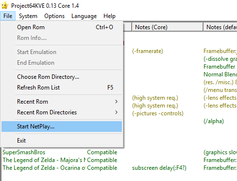
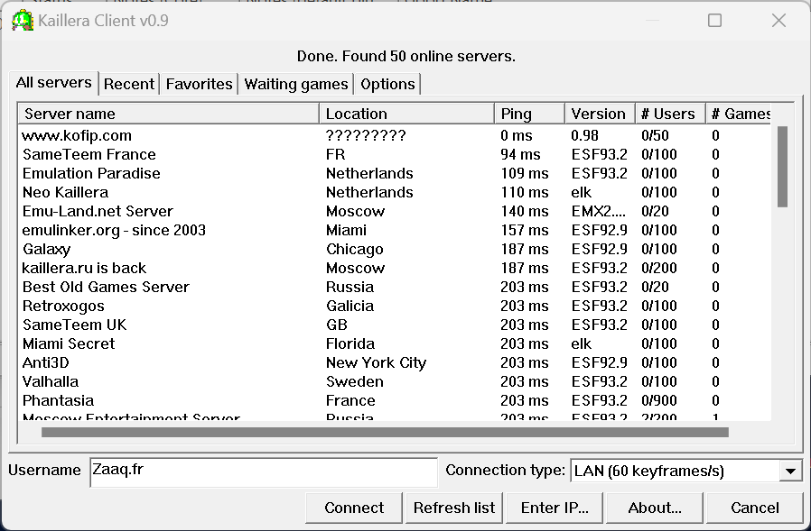
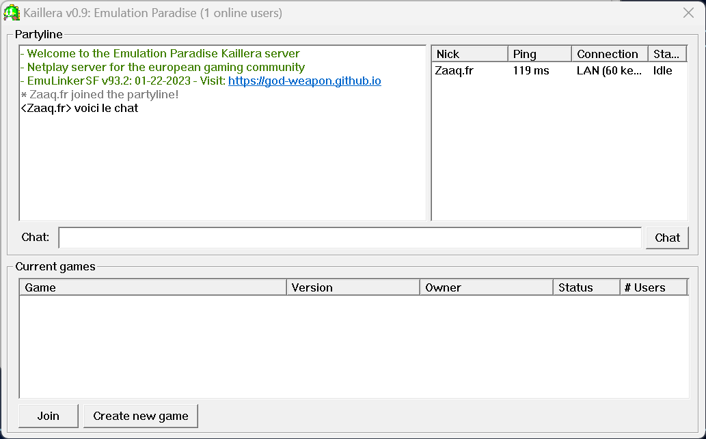

<!DOCTYPE html>
<html>
<head>
  <meta charset="UTF-8">
  <meta name="viewport" content="width=device-width, initial-scale=1.0">
  <link rel="stylesheet" href="../../../css/style.css">
  <title>ZAAQ</title>
  <link rel="icon" href="../../../img/icon.ico" type="image/x-icon">
</head>
	
	
</html>


<body>
  <div class="wrapper">
    <header>
      <div class="banner">
        
        <a href="https://www.zaaq.fr">Accueil</a>
            <a href="../../../../ressources/pages/external.html">Sites</a>    
             
            <a href="../../../../ressources/pages/ssb.html">Smash</a>     
            <a href="../../../../ressources/pages/contact.html">Contact</a>
 
      </div>
    </header>

    <div class="container">
      

      <section>
		<p><h2>Comment configurer un émulateur pour jouer en ligne pour jouer à Smash 64</h2></p>
		
			<p>1.Une fois que tout est configuré via les tutos précédents vous pouvez jouer en ligne. allez dans "file" puis "Start Netpalay"</a></p>
			
      <div class="ssb64o">
        <h1></h1>
      </div>
      
      <p>2. Vous arriverez sur une page avec une liste de serveur, mettez un nom en bas dans "username" puis choisissez un serveur en cliquant dessus.</p>
			
			<div class="ssb64o">
			<h1></h1>
		</div>
			<p>3.Une fois que vous êtes dans le serveur vous avez à gauche un chat, a droite les joueurs connectés et en bas les parties en cours, vous pouvez en rejoindre une ou en créer une.</p>
			<div class="ssb64o">
			<h1></h1>

      <p>Voilà c'est fini !</p>
			
		   <p><a href="index.html">Retour</a></p>
      </section>
    </div>

    <footer>
      <p>© 2023 - ZAAQ - ArthurM</p>
    </footer>
  </div>
  <script src="script.js"></script>
</body>
</html>


